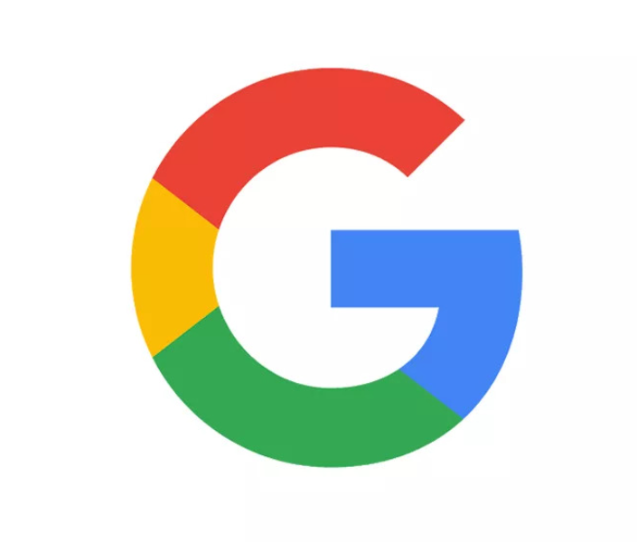
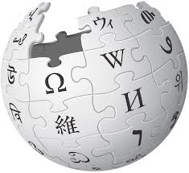

Các trang web yêu thích và hữu ích
Là một trong web mình yêu thích nhất với sự tiện lợi và thông minh.

Google được thành lập vào năm 1998 bởi Larry Page và Sergey Brin trong khi họ là nghiên cứu sinh đã có bằng tiến sĩ tại Đại học Stanford ở California.
Họ cùng nhau sở hữu khoảng 14% cổ phần và kiểm soát 56% quyền biểu quyết của cổ đông thông qua cổ phiếu ưu đãi.
Họ đã hợp nhất Google thành một công ty tư nhân vào ngày 4 tháng 9 năm 1998.
Một đợt chào bán công khai lần đầu (IPO) diễn ra vào ngày 19 tháng 8 năm 2004 và Google chuyển đến trụ sở chính tại Mountain View, California với tên Googleplex.
Vào tháng 8 năm 2015, Google đã công bố kế hoạch tổ chức lại công ty với tư cách là một tập đoàn có tên là Alphabet Inc.
Google là công ty con hàng đầu của Alphabet và sẽ tiếp tục là công ty ô dù vì lợi ích Internet của Alphabet. Sundar Pichai được bổ nhiệm làm CEO của Google,
thay thế Larry Page trở thành CEO của Alphabet.
Trang web dùng để học lập trình, có chứa nhiều code khác nhau giúp chúng ta tìm hiểu và học tập.
 W3Schools là một trang web giáo dục freemium để học lập trình trực tuyến.
Ban đầu được phát hành vào năm 1998, nó có tên bắt nguồn từ World Wide Web nhưng không liên kết với W3 Consortium .
W3Schools cung cấp các khóa học bao gồm nhiều khía cạnh của phát triển web.
W3Schools cũng xuất bản các mẫu HTML miễn phí. Nó được điều hành bởi Refsnes Data ở Na Uy .
Nó có một trình soạn thảo văn bản trực tuyến có tên là TryIt Editor và người đọc có thể chỉnh sửa các ví dụ và chạy mã trong môi trường thử nghiệm.
W3Schools là một trang web giáo dục freemium để học lập trình trực tuyến.
Ban đầu được phát hành vào năm 1998, nó có tên bắt nguồn từ World Wide Web nhưng không liên kết với W3 Consortium .
W3Schools cung cấp các khóa học bao gồm nhiều khía cạnh của phát triển web.
W3Schools cũng xuất bản các mẫu HTML miễn phí. Nó được điều hành bởi Refsnes Data ở Na Uy .
Nó có một trình soạn thảo văn bản trực tuyến có tên là TryIt Editor và người đọc có thể chỉnh sửa các ví dụ và chạy mã trong môi trường thử nghiệm.
Một nền tảng chia sẻ video trực tuyến với nhiều tính năng khác nhau, mình thường dùng để nghe nhạc và xem phim.
 YouTube được ra mắt vào ngày 14 tháng 2 năm 2005, bởi Steve Chen , Chad Hurley và Jawed Karim , ba cựu nhân viên của PayPal .
Có trụ sở chính tại San Bruno, California , Hoa Kỳ, đây là trang web được truy cập nhiều thứ hai trên thế giới, sau Google Search .
Tính đến tháng 1 năm 2024, YouTube có hơn 2,7 tỷ người dùng hàng tháng , những người cùng nhau xem hơn một tỷ giờ video mỗi ngày.
Tính đến tháng 5 năm 2019 , video đã được tải lên nền tảng này với tốc độ hơn 500 giờ nội dung mỗi phút, tính đến năm 2021, tổng cộng có khoảng 14 tỷ video.
YouTube được ra mắt vào ngày 14 tháng 2 năm 2005, bởi Steve Chen , Chad Hurley và Jawed Karim , ba cựu nhân viên của PayPal .
Có trụ sở chính tại San Bruno, California , Hoa Kỳ, đây là trang web được truy cập nhiều thứ hai trên thế giới, sau Google Search .
Tính đến tháng 1 năm 2024, YouTube có hơn 2,7 tỷ người dùng hàng tháng , những người cùng nhau xem hơn một tỷ giờ video mỗi ngày.
Tính đến tháng 5 năm 2019 , video đã được tải lên nền tảng này với tốc độ hơn 500 giờ nội dung mỗi phút, tính đến năm 2021, tổng cộng có khoảng 14 tỷ video.
Wikipedia là một bách khoa toàn thư mở trực tuyến đa ngôn ngữ ở đây mình có rất nhiều thông tin về những thứ mình tìm, về lịch sử, chính trị,v.v. Đây là 1 trong những web mình thích nhất.

Wikipedia Tính đến tháng 1 năm 2021, theo xếp hạng của Alexa, Wikipedia là một trong 15 trang web phổ biến nhất thế giới
còn tạp chí The Economist xếp Wikipedia là "địa điểm được truy cập nhiều thứ 13 trên web".
Wikipedia không chạy quảng cáo và do tổ chức phi lợi nhuận Wikimedia quản lý, nhận tài trợ chủ yếu thông qua quyên góp.
Jimmy Wales và Larry Sanger đưa Wikipedia đi vào hoạt động từ ngày 15 tháng 1 năm 2001. Cái tên "Wikipedia" là do Sanger ghép từ "wiki" và "encyclopedia"